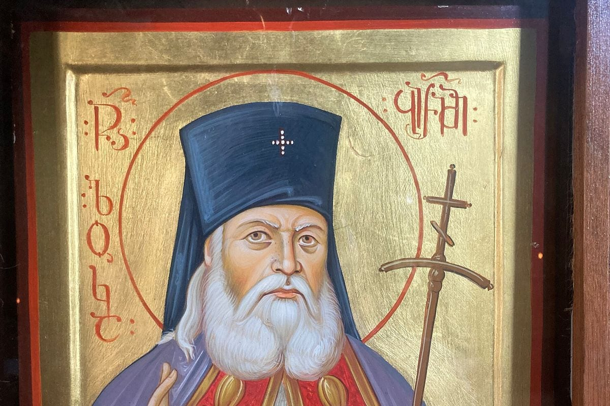

Почему мы гоняемся за чужим успехом
Мы живём в мире, который навязывает чужой успех. Соцсети, реклама, бизнес-литература — все говорят: «Будь эффективным. Будь продуктивным. Достигай. Побеждай». И мы пытаемся. Мы берём чужие мерки и примеряем их на себя. Становимся менеджерами, потому что «это престижно». Идём в IT, потому что «там деньги». Открываем бизнес, потому что «так надо».
А потом чувствуем пустоту. Потому что чужой успех — не наш. Мы гнались за ролями, которые нам не подходят. За социальными масками, которые не отражают нашу суть.
Но есть другой взгляд. Он старше, чем вся эта гонка. И он говорит: ты уже задуман. Творец создал тебя по Своему образу и подобию. Он заложил в тебя уникальные таланты. И твоя задача — не «стать успешным». Твоя задача — внести свой вклад. Тот, который можешь внести только ты.
Мы привыкли думать, что талант — это что-то редкое. Что «талантливых людей» мало. Что большинство — «обычные». Это ложь. Психолог Говард Гарднер доказал: интеллект не один. Их минимум восемь: логический, лингвистический, пространственный, музыкальный, телесный, межличностный, внутриличностный, натуралистический. У каждого человека — свой набор. Кто-то гениален в общении, кто-то — в движении, кто-то — в анализе, кто-то — в эмпатии.
А православная традиция говорит ещё глубже: каждый человек задуман как уникальная личность. Не «один из многих». А единственный в своём роде. И таланты — это не случайность. Это замысел. Это дары, которые нужно приумножить, а не закопать. Притча о талантах — не про деньги. Она про реализацию. Один человек получил пять талантов, другой — два, третий — один. И тот, кто закопал свой единственный талант, был осуждён. Не за то, что мало получил. А за то, что не реализовал то, что было дано.
Исторический пример: святитель Лука
Святитель Лука (Войно-Ясенецкий) — архиепископ, хирург, учёный, автор трудов по гнойной хирургии, лауреат Сталинской премии. Он прошёл лагеря, ссылки, гонения. Но не перестал реализовывать таланты.

Он не выбирал между «служением» и «профессией». Он жил в обоих. Он оперировал, писал научные работы, служил Богу. Он не гнался за мирским успехом — но достиг его. Потому что реализовал то, что было задумано о нём. Не по чужим меркам. По своим.
Святитель Лука говорил: «Я полюбил страдание, которое меня очистило». Он не искал успеха. Он искал верность. И в этой верности — и своему делу, и своему призванию, и Богу — он стал тем, кем был задуман.
Что говорит наука
Психологи подтверждают: реализация талантов связана с благополучием. Не «успех» как статус, а именно использование своих сильных сторон.
Исследование, опубликованное в Journal of Positive Psychology, показало: люди, которые используют свои сильные стороны каждый день, более удовлетворены жизнью. Не те, кто «достиг многого». А те, кто делает то, что соответствует их природе.
Другое исследование, опубликованное в Psychological Science, выявило: целостность личности важнее, чем внешние достижения. Когда «я» и «моя жизнь» совпадают, когда нет разрыва между «работой» и «собой», — человек чувствует себя лучше. Целостность — это не про «идеальность». Это про соединённость.
Пример из моей практики
В моей практике карьерного психолога это одна из самых глубоких тем. Ко мне приходят люди, которые формально «всё сделали правильно». Но чувствуют, что живут не свою жизнь. Они шли к целям, которые им не подходят. Они играли роли, которые им не свойственны.
Один из показательных случаев: клиент, юрист с 15-летним опытом, успешный, уважаемый. Но он говорил: «Я всю жизнь занимаюсь не своим. Я не знаю, кто я». Когда мы начали разбирать, что ему на самом деле важно, выяснилось: он любит природу, животных, хочет заботиться о земле. Он годами подавлял это в себе, потому что «это не серьёзно». А его талант — быть заботливым, внимательным, соединённым с живым — оставался нереализованным.
Мы не стали менять профессию. Но мы начали возвращать целостность. Он стал уделять время тому, что важно. Он перестал делить себя на «работу» и «жизнь». И это изменило всё. Не работу. Себя.
Что делать, если вы не знаете, в чём ваш талант
Речь не о том, чтобы срочно всё поменять. Речь о том, чтобы увидеть то, что уже есть.
Признать, что талант есть
У каждого. Не один. Может быть, он не там, где вы искали. Может быть, вы его обесценили. Но он есть. И его можно найти.
Посмотреть, что вам даётся легко
Не «что я умею», а «что я делаю без усилий». Что радует. Что вдохновляет. Что получается само. Это и есть талант. Не «навык». А природная способность.
Заметить, что замечают другие
Часто мы обесцениваем то, что у нас естественно. Спросите близких: «Что мне даётся легко? За что ты ко мне обращаешься?» Ответы могут удивить. То, что для вас — «ну это же просто», для других может быть ценным даром.
Реализовать, а не закапывать
Не «когда-нибудь». Не «если получится». Сейчас. В том, что есть. Не ждать «идеальных условий». Начать. Даже если это маленький шаг. Даже если это не «великое». Даже если это не приносит денег. Реализация — это не про «успех». Это про верность себе. А если вы ищете своё призвание, но не находите — читайте статью «Смысл не находят — его создают».
Вернуть целостность
Не дели себя на «работу» и «жизнь». Не играй роли, которые тебе не подходят. Будь одним. Соедини то, что ты делаешь, с тем, кто ты есть. А о том, как понять, что для тебя действительно важно, — читайте в статье «Ценности как компас: на что опираться, чтобы принимать верные решения».
Что посмотреть по этой теме
Если тема откликается и хочется увидеть её вживую, а не только в тексте, — вот два фильма, которые я рекомендую.
«Излечить страх» (2013, режиссёр Александр Пархоменко) — художественный фильм о святителе Луке (Войно-Ясенецком). Главную роль сыграл Виталий Безруков. Фильм показывает путь человека, который не выбирал между наукой и верой, между служением и профессией. Он просто шёл своим путём — и стал тем, кем был задуман.
«Джузеппе Москати: Исцеляющая любовь» (2007, режиссёр Джакомо Кампиотти) — итальянский фильм о неаполитанском враче, который лечил бедняков бесплатно и считал, что истинное исцеление возможно только через любовь и сострадание. Это история о том, как профессия становится служением, а талант — даром для других.
Два разных человека, две разные страны, две разные эпохи. Но оба — о том, что реализация талантов не про статус и деньги. А про верность тому, что задумано о тебе.
Вывод
У каждого есть талант. Не один. И каждый задуман как уникальная личность. Твоя задача — не гнаться за чужим успехом. Твоя задача — внести свой вклад. Тот, который можешь внести только ты.
Если вы сейчас чувствуете, что живёте не свою жизнь, — возможно, вы просто забыли, что вы уже талантливы. И что мир ждёт именно вашего вклада. Не чужого. Вашего.